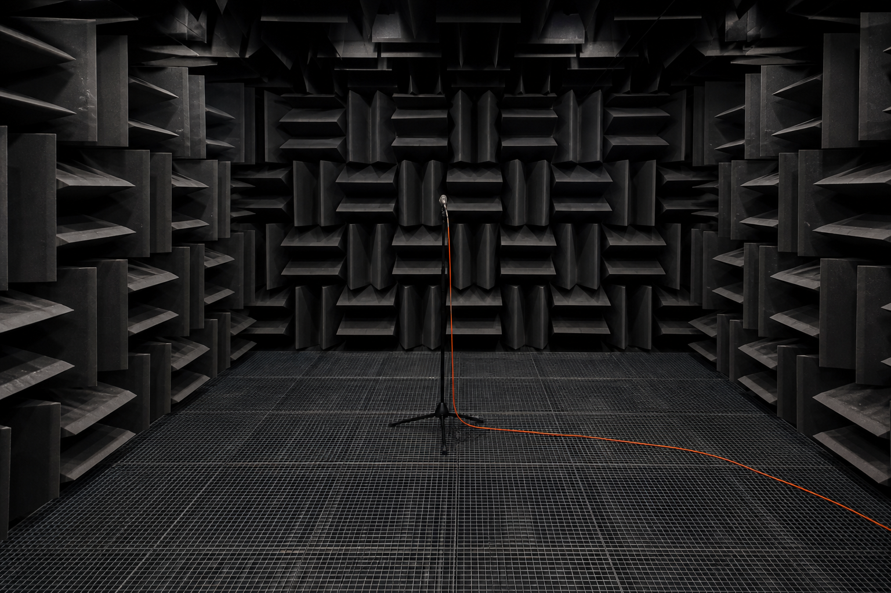

ALBURY / TECHNOLOGY
Technology & Licensing
DSP, spatial and transducer-control tools designed to survive real products.

Performance before appearance.
Albury Core and RoomField support mobile, automotive, headphone, broadcast and premium-home programmes through embedded software, reference design and validation.
Working process
- 01Use-case and constraint definition
- 02Reference implementation
- 03Integration support
- 04Perceptual and bench validation
- 05Licence and lifecycle support